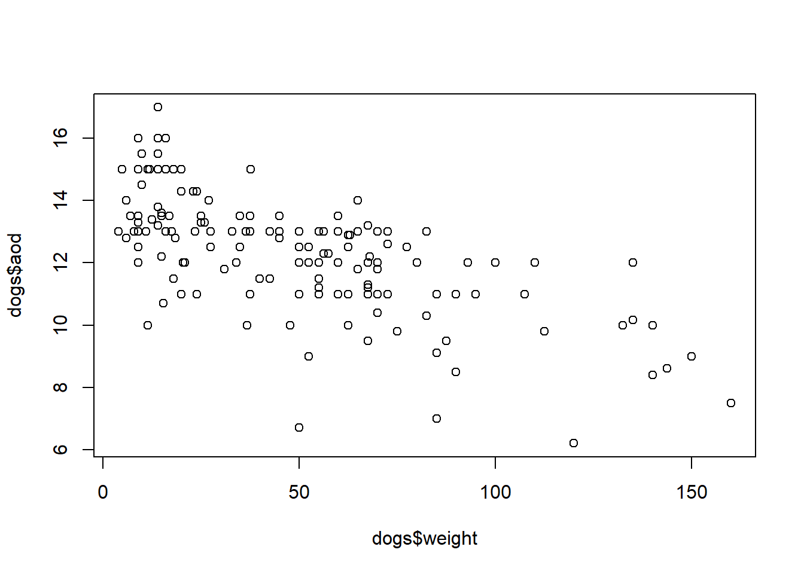

Last updated: 2020-09-16
Checks: 7 0
Knit directory: visualization/
This reproducible R Markdown analysis was created with workflowr (version 1.6.2). The Checks tab describes the reproducibility checks that were applied when the results were created. The Past versions tab lists the development history.
Great! Since the R Markdown file has been committed to the Git repository, you know the exact version of the code that produced these results.
Great job! The global environment was empty. Objects defined in the global environment can affect the analysis in your R Markdown file in unknown ways. For reproduciblity it’s best to always run the code in an empty environment.
The command set.seed(20200916) was run prior to running the code in the R Markdown file. Setting a seed ensures that any results that rely on randomness, e.g. subsampling or permutations, are reproducible.
Great job! Recording the operating system, R version, and package versions is critical for reproducibility.
Nice! There were no cached chunks for this analysis, so you can be confident that you successfully produced the results during this run.
Great job! Using relative paths to the files within your workflowr project makes it easier to run your code on other machines.
Great! You are using Git for version control. Tracking code development and connecting the code version to the results is critical for reproducibility.
The results in this page were generated with repository version 511469d. See the Past versions tab to see a history of the changes made to the R Markdown and HTML files.
Note that you need to be careful to ensure that all relevant files for the analysis have been committed to Git prior to generating the results (you can use wflow_publish or wflow_git_commit). workflowr only checks the R Markdown file, but you know if there are other scripts or data files that it depends on. Below is the status of the Git repository when the results were generated:
Ignored files:
Ignored: .Rhistory
Ignored: .Rproj.user/
Untracked files:
Untracked: PartB_histogram.pdf
Untracked: scatter_plot.pdf
Untracked: vis_PartB.png
Note that any generated files, e.g. HTML, png, CSS, etc., are not included in this status report because it is ok for generated content to have uncommitted changes.
These are the previous versions of the repository in which changes were made to the R Markdown (analysis/visualization.Rmd) and HTML (docs/visualization.html) files. If you’ve configured a remote Git repository (see ?wflow_git_remote), click on the hyperlinks in the table below to view the files as they were in that past version.
| File | Version | Author | Date | Message |
|---|---|---|---|---|
| html | 6406a7c | KiseokUchicago | 2020-09-16 | Build site. |
| Rmd | bdb62f7 | KiseokUchicago | 2020-09-16 | updates |
| html | ed599f7 | KiseokUchicago | 2020-09-16 | Build site. |
| Rmd | 3331f39 | KiseokUchicago | 2020-09-16 | wflow_publish("analysis/*Rmd") |
| html | 6797e0d | KiseokUchicago | 2020-09-16 | Build site. |
| Rmd | 0054194 | KiseokUchicago | 2020-09-16 | adding index |
| html | d2a9966 | KiseokUchicago | 2020-09-16 | Build site. |
| Rmd | 7aca681 | KiseokUchicago | 2020-09-16 | pushing |
Peter Carbonetto
In this lesson, you will use ggplot2 to create effective visualizations of data. The ggplot2 package is a powerful plotting interface that extends the base plotting functions in R. You will learn that creating effective visualizations hinges on good data preparation. (In reality, good data preparation can take days or weeks, but we can still illustrate some useful data preparation practices.) The main difference with Advanced Computing 1 is that we take a more in-depth look at ggplot2 and plotting strategies.
Use this site for reference
https://ggplot2.tidyverse.org/reference/
# install.packages("ggplot2")
# install.packages("cowplot")
# install.packages("ggrepel")
# install.packages("htmlwidgets")
# install.packages("plotly")
library(ggplot2)
library(cowplot)
library(ggrepel)
library(htmlwidgets)
library(plotly)
다음의 패키지를 부착합니다: 'plotly'
The following object is masked from 'package:ggplot2':
last_plot
The following object is masked from 'package:stats':
filter
The following object is masked from 'package:graphics':
layout# Import data
dogs <- read.csv("data/dogs.csv",stringsAsFactors = FALSE)
head(dogs)
colnames(dogs)
summary(dogs)
str(dogs)
# Let’s take a closer look at the shortcoat column:
unique(dogs$shortcoat)
mean(dogs$shortcoat)
mean(dogs$shortcoat, na.rm=TRUE)# basic function
plot(dogs$weight,dogs$aod)
# use ggplot2
p1 <- ggplot(dogs,aes_string(x = "weight",y = "aod")) +
geom_point()
p1# some improvements
library(cowplot)
p2 <- p1 + labs(x= 'body weight (lbs)', y= 'longevity (years)', title = "Bigger dogs live less") + theme_cowplot()
p2
# Surprising subtlety with colour.
p4 <- ggplot(dogs,aes_string(x = "weight",y = "aod", color = 'shortcoat')) + geom_point() + theme_cowplot()
p4
# fix the plot to discrete value
class(dogs$shortcoat)
dogs$shortcoat <- factor(dogs$shortcoat)
summary(dogs$shortcoat)
p4 <- ggplot(dogs,aes_string(x = "weight",y = "aod", color = 'shortcoat')) + geom_point() + theme_cowplot()
# voila!
p4## Add linear regression use colors() to see the list of colors
fit <- lm(aod ~ weight,data=dogs)
summary(fit)
coef(fit)
# compare the fit
p5 <- p4 + geom_abline(color='forestgreen', intercept = coef(fit)[1], slope=coef(fit)[2]) + geom_abline(intercept = 13, slope = -1/28, color = 'orange')
p5
# add breed names
library(ggrepel)
p6 <- p5 + geom_text_repel(mapping =aes_string(label = 'breed'), color = 'darkblue')
p6
# add only fraction of them
p6 <- p5 + geom_text_repel(mapping =aes_string(label = 'breed'), color = 'darkblue', data=dogs[1:20,])
p6
# Save the image to pdf
# ggsave('scatter_plot.pdf',p6)# devtools::install_github('slowkow/ggrepel')
# failed to install the newer version
sessionInfo()